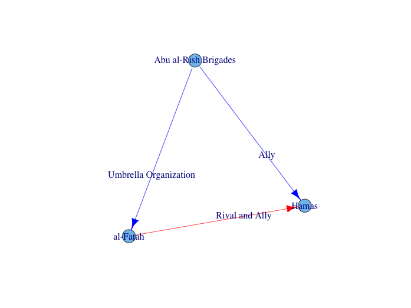
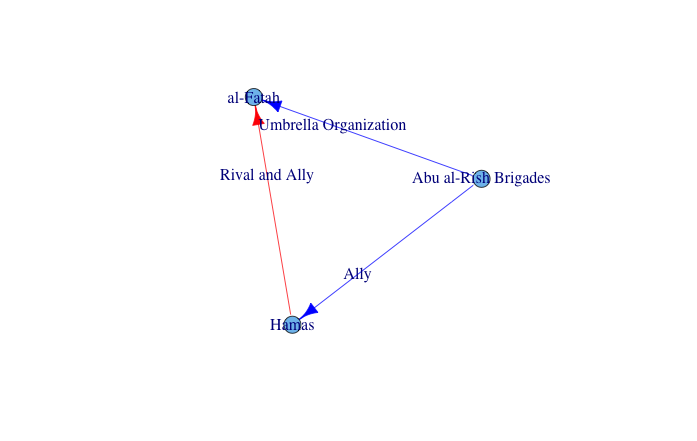
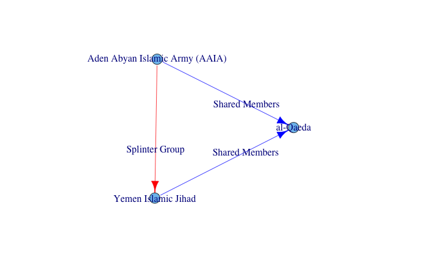
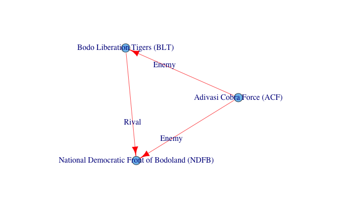

I am interested in exploring some features of a social network, mainly that of social balance. Many of my past blog post have been dependent on data that I have had to scrape from the web, this one is no different. I want to do a few things here. First I want to illustrate how easy this is to do if you find some data that you are interested in, I can now do this type of thing in about an hour, so I have actually included the code for this instead of starting at the data.
First and foremost I want to emphasize that before starting down this path, examine the source to see if they have an easier way to provide the data, either an API or a direct download. Second make sure that they are okay with you scraping the data. If they allow you to do this are there any constraints or permissions of use.
The source of interest is the data.
To get started always turn stringsAsFactors to FALSE when doing this type of work or you will hit many walls where things appear to be easy but do not work. There are two main packages I use for this purpose, httr and XML. It depends on how the data is structured as to which one is better suited. Here we will be using the httr package. We should also load a few other packages as well as some utility code for the rest of this effort. Some of these functions in this gist are part of my refactoring attempts, can I get to some basic pattern for crawling and supply source specific functions for detail level. This is a more long term effort though as there is so much variety in webpages.
library(httr)
library(igraph)
library(d3Network)
library(devtools, warn.conflicts = F)
options(stringsAsFactors = FALSE)
source_url('http://darrkj.github.io/blog/june222014/terrorNet.R')## SHA-1 hash of file is f4cab73da5244b0413cd2108409faa95abccc58eNow we need to define our site of interest and actually crawl all of the links and scrape the data of interest. This basically results in one loop for each case, the first will gather all of the URLs we are interested in, while the second will pull data from each of these pages.
# Base website
base <- 'http://www.start.umd.edu/tops/'
# Query string for alphabetical search
site <- 'terrorist_organizations_by_alpha.asp?q='
# These are the sites to search
site <- paste(base, site, LETTERS, sep = '')
# Initialze data frame.
group <- data.frame(ID = NA, name = NA)
for (i in site) {
# Pull data for each letter.
page <- cleanOrg(strsplit(as.character(GET(i)), '\n')[[1]])
group <- rbind(group, page)
}
# Remove first inited row
group <- group[-1, ]
# Clean up workspace
rm(i, site, page)
# The scraping loop
details <- list()
for (i in 1:nrow(group)) {
# Create url
url <- paste(base, group[i, 1], sep = '')[1]
x <- cleanDet(url)
net <- x[[1]]
x <- x[[2]]
details[[group[i, 2]]] <- list(name = group[i, 2], ID = group[i, 1],
net = net
}
# clean up
rm(group, base, url, i, x, cleanDet, cleanOrg, net)Now we have all of the information on each terrorist organization. We need to do some cleanup and create a network structure in the process.
You can download the data up to this point below.I pulled a lot of extra stuff here for things that may or may not be interesting later. We need to clean some of this out and pull what is needed into an edge list. Here each of the organizations may turn into many edges as each has a list of other organizations and there type of relationship attached.
# Initialze the network edge list
net <- data.frame(from = NA, fromn = NA, to = NA, ton = NA, type = NA)
# Loop through all of the detail info and pull out individual edges
for (i in seq(details)) {
cur <- details[[i]]
# Get the ID (4324) for the current org
cur$ID <- ID(cur$ID)
# Add the ID to the edge list
if (!is.null(cur$net$ID)) {
cur$net$from <- cur$ID
cur$net$fromn <- cur$name
cur$net$to <- ID(cur$net$ID)
# Clean up the edge list, add name connection type
tmp <- strsplit(cur$net$name, ' -- ')
cur$net$ton <- unlist(lapply(tmp, `[`, 1))
cur$net$type <- unlist(lapply(tmp, `[`, 2))
# remove original fields
cur$net <- cur$net[, 3:7]
net <- rbind(net, cur$net)
}
}
net <- net[-1, ]
rm(cur, i, tmp, ID, clean)
This is more or less the end of the web crawling and cleaning of the data. The portion I was really interested in comes next. Determining whether terrorist organizations follow the rules from social network analysis pertaining to social balance.
Here is what are our current network looks like. This looks very different than most social networks. It will be interesting to see of the rules that apply as far as social balance are concerned still hold.
x <- graph.data.frame(net[, c(2, 4)])
d3plot(x, 700, 1300)
Social Balance Analysis
The Social Balance Theory lays out some rules for social network relationships. These pertain to rules similar to if A like B and B likes C then A will like C. All permutations of like and dislike can be boiled down to two rules. In any triadic relationship either all three like each other or two dislike edges and one like. This paper does a much better job of going into all of the specifics. As a common rule if we think about it as a signed network, any triadic relationship's edges must have a positive product.
The first thing we must do is devise a way to find all triangles in the network. This turns into a search for each pair of adjacent vertices that share a similar adjacent vertex. We result in list where each items is a set of three vertices, which form a triangle or 3-clique. We also have to do some interpretation of what each edge type is. This boils down to who likes who and who dislikes who. We can then use these to turn the the network into a signed network where positive means like and negative means dislike.
Now with the search out of the way we just need to determine which triangles do not follow the social balance rules. Since the product of all of the edges must be positive we have only a few options. The cases with (1, 1, 1) and (1, -1, -1) agree with the rule disregarding order. The cases with (-1, -1, -1) and (1, 1, -1) do not agree.We have a quite a few cases which do not follow the rules. I need to do some further checks still to make sure that I have eliminated each graph automorphism, so it could actually be half of this number.
   This is very interesting as it means that so terrorist groups are at odds with groups who there allies are allies with. I guess that there is also a lot more that could be happening here a well since some relationships could have changed over time and this data goes back to the 1960's. It could be that the current snapshot is inaccurate as some organizations no longer exist, but we have there last known feelings towards others. As times changes their allies could start to be enemies. There is also the possibility that they have no reason to follow this sort of logic, or any logic at all. I would be much more interested in the temporal case, especially seeing how and when they turned on each other and how that propagates through the rest of the network.